In order to visualize natural phenomena, one must first determine how to best represent geographic space. Data models are a set of rules and/or constructs used to describe and represent aspects of the real world in a computer. Two primary data models are available to complete this task: raster data models and vector data models.
The raster data model is widely used in applications ranging far beyond geographic information systems (GISs). Most likely, you are already very familiar with this data model if you have any experience with digital photographs. The ubiquitous JPEG, BMP, and TIFF file formats (among others) are based on the raster data model (see Chapter 5 "Geospatial Data Management", Section 5.3 "File Formats"). Take a moment to view your favorite digital image. If you zoom deeply into the image, you will notice that it is composed of an array of tiny square pixels (or picture elements). Each of these uniquely colored pixels, when viewed as a whole, combines to form a coherent image (Figure 4.1 "Digital Picture with Zoomed Inset Showing Pixilation of Raster Image").
Figure 4.1 Digital Picture with Zoomed Inset Showing Pixilation of Raster Image
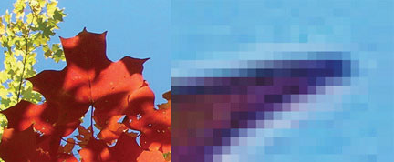Furthermore, all liquid crystal display (LCD) computer monitors are based on raster technology as they are composed of a set number of rows and columns of pixels. Notably, the foundation of this technology predates computers and digital cameras by nearly a century. The neoimpressionist artist, Georges Seurat, developed a painting technique referred to as “pointillism” in the 1880s, which similarly relies on the amassing of small, monochromatic “dots” of ink that combine to form a larger image (Figure 4.2 "Pointillist Artwork"). If you are as generous as the author, you may indeed think of your raster dataset creations as sublime works of art.
Figure 4.2 Pointillist Artwork
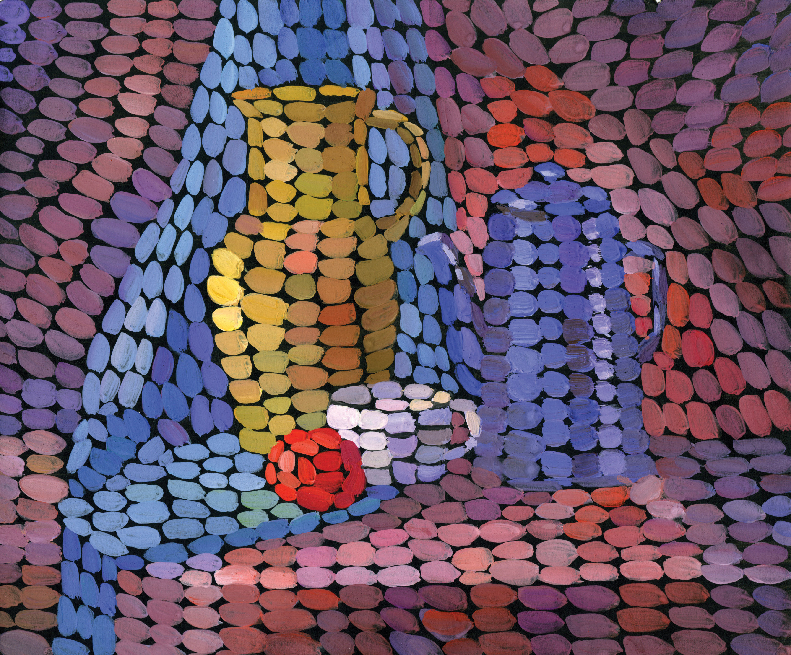The raster data model consists of rows and columns of equally sized pixels interconnected to form a planar surface. These pixels are used as building blocks for creating points, lines, areas, networks, and surfaces (Chapter 2 "Map Anatomy", Figure 2.6 "Map Overlay Process" illustrates how a land parcel can be converted to a raster representation). Although pixels may be triangles, hexagons, or even octagons, square pixels represent the simplest geometric form with which to work. Accordingly, the vast majority of available raster GIS data are built on the square pixel (Figure 4.3 "Common Raster Graphics Used in GIS Applications: Aerial Photograph (left) and USGS DEM (right)"). These squares are typically reformed into rectangles of various dimensions if the data model is transformed from one projection to another (e.g., from State Plane coordinates to UTM [Universal Transverse Mercator] coordinates).
Figure 4.3 Common Raster Graphics Used in GIS Applications: Aerial Photograph (left) and USGS DEM (right)
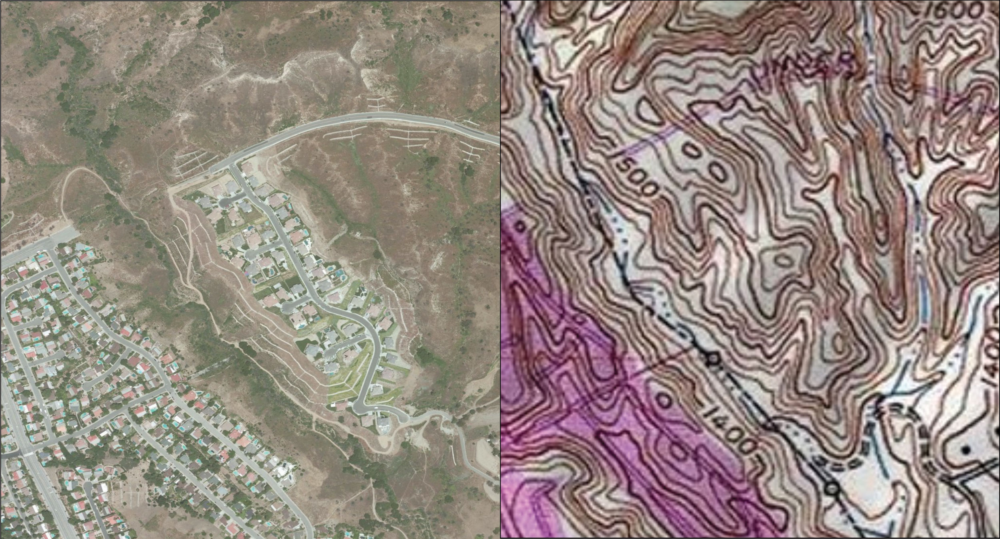Source: Data available from U.S. Geological Survey, Earth Resources Observation and Science (EROS) Center, Sioux Falls, SD.
Because of the reliance on a uniform series of square pixels, the raster data model is referred to as a grid-based system. Typically, a single data value will be assigned to each grid locale. Each cell in a raster carries a single value, which represents the characteristic of the spatial phenomenon at a location denoted by its row and column. The data type for that cell value can be either integer or floating-point (Chapter 5 "Geospatial Data Management", Section 5.1 "Geographic Data Acquisition"). Alternatively, the raster graphic can reference a database management system wherein open-ended attribute tables can be used to associate multiple data values to each pixel. The advance of computer technology has made this second methodology increasingly feasible as large datasets are no longer constrained by computer storage issues as they were previously.
The raster model will average all values within a given pixel to yield a single value. Therefore, the more area covered per pixel, the less accurate the associated data values. The area covered by each pixel determines the spatial resolutionThe smallest distance between two adjacent features that can be detected in an image. of the raster model from which it is derived. Specifically, resolution is determined by measuring one side of the square pixel. A raster model with pixels representing 10 m by 10 m (or 100 square meters) in the real world would be said to have a spatial resolution of 10 m; a raster model with pixels measuring 1 km by 1 km (1 square kilometer) in the real world would be said to have a spatial resolution of 1 km; and so forth.
Care must be taken when determining the resolution of a raster because using an overly coarse pixel resolution will cause a loss of information, whereas using overly fine pixel resolution will result in significant increases in file size and computer processing requirements during display and/or analysis. An effective pixel resolution will take both the map scale and the minimum mapping unit of the other GIS data into consideration. In the case of raster graphics with coarse spatial resolution, the data values associated with specific locations are not necessarily explicit in the raster data model. For example, if the location of telephone poles were mapped on a coarse raster graphic, it would be clear that the entire cell would not be filled by the pole. Rather, the pole would be assumed to be located somewhere within that cell (typically at the center).
Imagery employing the raster data model must exhibit several properties. First, each pixel must hold at least one value, even if that data value is zero. Furthermore, if no data are present for a given pixel, a data value placeholder must be assigned to this grid cell. Often, an arbitrary, readily identifiable value (e.g., −9999) will be assigned to pixels for which there is no data value. Second, a cell can hold any alphanumeric index that represents an attribute. In the case of quantitative datasets, attribute assignation is fairly straightforward. For example, if a raster image denotes elevation, the data values for each pixel would be some indication of elevation, usually in feet or meters. In the case of qualitative datasets, data values are indices that necessarily refer to some predetermined translational rule. In the case of a land-use/land-cover raster graphic, the following rule may be applied: 1 = grassland, 2 = agricultural, 3 = disturbed, and so forth (Figure 4.4 "Land-Use/Land-Cover Raster Image"). The third property of the raster data model is that points and lines “move” to the center of the cell. As one might expect, if a 1 km resolution raster image contains a river or stream, the location of the actual waterway within the “river” pixel will be unclear. Therefore, there is a general assumption that all zero-dimensional (point) and one-dimensional (line) features will be located toward the center of the cell. As a corollary, the minimum width for any line feature must necessarily be one cell regardless of the actual width of the feature. If it is not, the feature will not be represented in the image and will therefore be assumed to be absent.
Figure 4.4 Land-Use/Land-Cover Raster Image
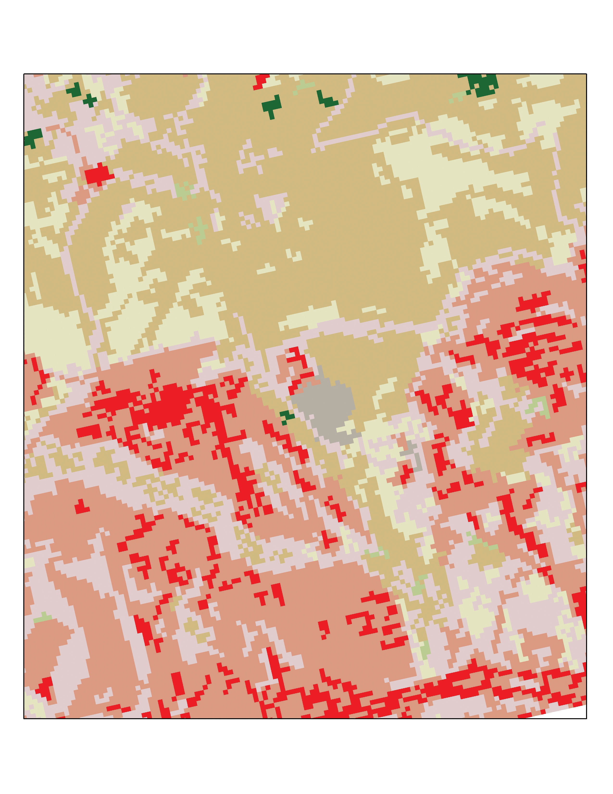Source: Data available from U.S. Geological Survey, Earth Resources Observation and Science (EROS) Center, Sioux Falls, SD.
Several methods exist for encoding raster data from scratch. Three of these models are as follows:
Figure 4.5 Cell-by-Cell Encoding of Raster Data
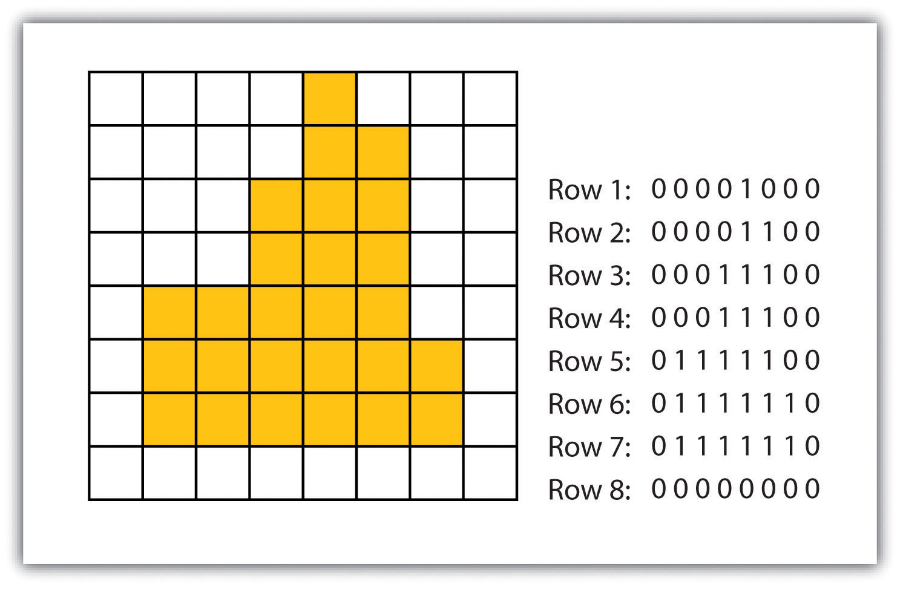Figure 4.6 Run-Length Encoding of Raster Data
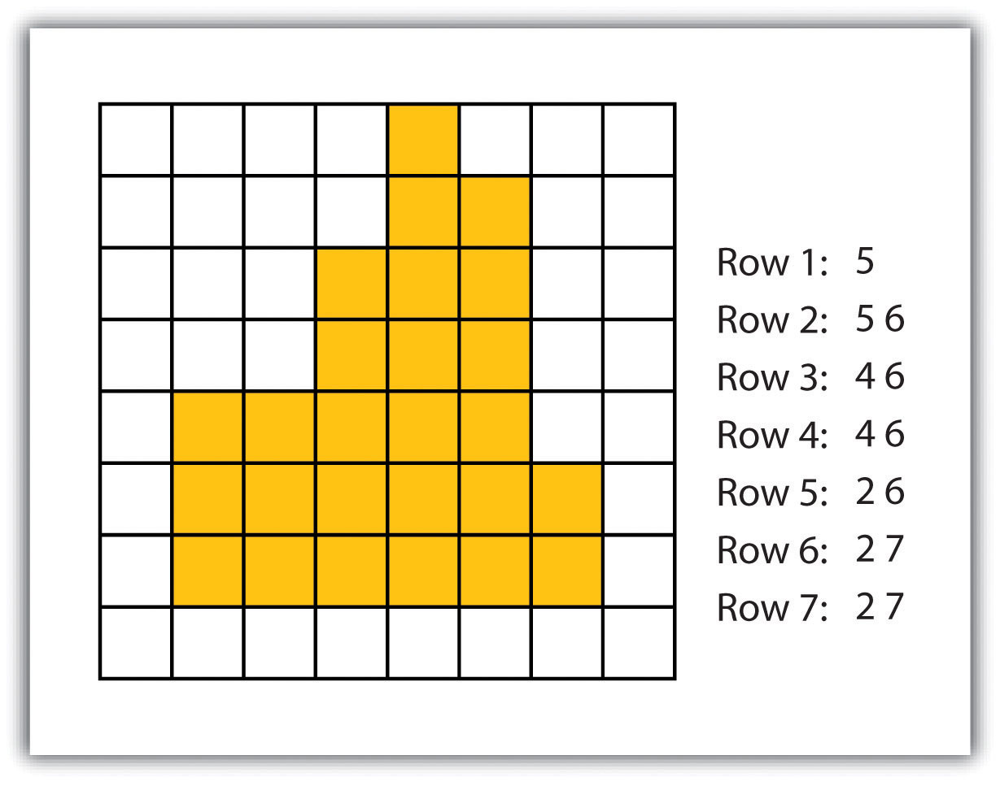Figure 4.7 Quad-Tree Encoding of Raster Data
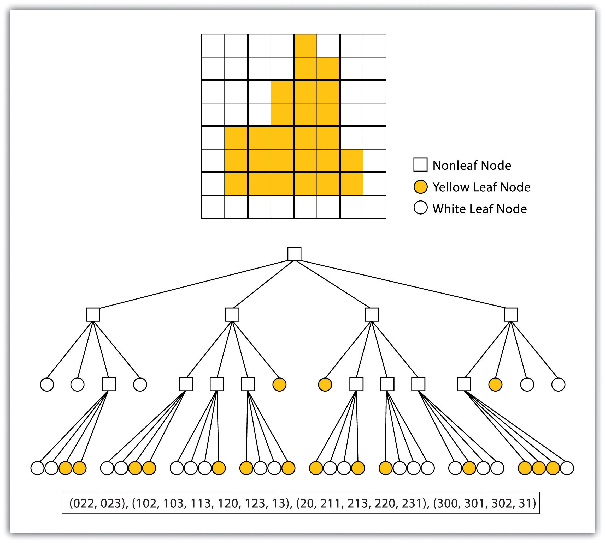The use of a raster data model confers many advantages. First, the technology required to create raster graphics is inexpensive and ubiquitous. Nearly everyone currently owns some sort of raster image generator, namely a digital camera, and few cellular phones are sold today that don’t include such functionality. Similarly, a plethora of satellites are constantly beaming up-to-the-minute raster graphics to scientific facilities across the globe (Chapter 5 "Geospatial Data Management", Section 5.3 "File Formats"). These graphics are often posted online for private and/or public use, occasionally at no cost to the user.
Additional advantages of raster graphics are the relative simplicity of the underlying data structure. Each grid location represented in the raster image correlates to a single value (or series of values if attributes tables are included). This simple data structure may also help explain why it is relatively easy to perform overlay analyses on raster data (for more on overlay analyses, see Chapter 7 "Geospatial Analysis I: Vector Operations", Section 7.1 "Single Layer Analysis"). This simplicity also lends itself to easy interpretation and maintenance of the graphics, relative to its vector counterpart.
Despite the advantages, there are also several disadvantages to using the raster data model. The first disadvantage is that raster files are typically very large. Particularly in the case of raster images built from the cell-by-cell encoding methodology, the sheer number of values stored for a given dataset result in potentially enormous files. Any raster file that covers a large area and has somewhat finely resolved pixels will quickly reach hundreds of megabytes in size or more. These large files are only getting larger as the quantity and quality of raster datasets continues to keep pace with quantity and quality of computer resources and raster data collectors (e.g., digital cameras, satellites).
A second disadvantage of the raster model is that the output images are less “pretty” than their vector counterparts. This is particularly noticeable when the raster images are enlarged or zoomed (refer to Figure 4.1 "Digital Picture with Zoomed Inset Showing Pixilation of Raster Image"). Depending on how far one zooms into a raster image, the details and coherence of that image will quickly be lost amid a pixilated sea of seemingly randomly colored grid cells.
The geometric transformations that arise during map reprojection efforts can cause problems for raster graphics and represent a third disadvantage to using the raster data model. As described in Chapter 2 "Map Anatomy", Section 2.2 "Map Scale, Coordinate Systems, and Map Projections", changing map projections will alter the size and shape of the original input layer and frequently result in the loss or addition of pixels (White 2006).White, D. 2006. “Display of Pixel Loss and Replication in Reprojecting Raster Data from the Sinusoidal Projection.” Geocarto International 21 (2): 19–22. These alterations will result in the perfect square pixels of the input layer taking on some alternate rhomboidal dimensions. However, the problem is larger than a simple reformation of the square pixel. Indeed, the reprojection of a raster image dataset from one projection to another brings change to pixel values that may, in turn, significantly alter the output information (Seong 2003).Seong, J. C. 2003. “Modeling the Accuracy of Image Data Reprojection.” International Journal of Remote Sensing 24 (11): 2309–21.
The final disadvantage of using the raster data model is that it is not suitable for some types of spatial analyses. For example, difficulties arise when attempting to overlay and analyze multiple raster graphics produced at differing scales and pixel resolutions. Combining information from a raster image with 10 m spatial resolution with a raster image with 1 km spatial resolution will most likely produce nonsensical output information as the scales of analysis are far too disparate to result in meaningful and/or interpretable conclusions. In addition, some network and spatial analyses (i.e., determining directionality or geocoding) can be problematic to perform on raster data.
In contrast to the raster data model is the vector data model. In this model, space is not quantized into discrete grid cells like the raster model. Vector data models use points and their associated X, Y coordinate pairs to represent the vertices of spatial features, much as if they were being drawn on a map by hand (Aronoff 1989).Aronoff, S. 1989. Geographic Information Systems: A Management Perspective. Ottawa, Canada: WDL Publications. The data attributes of these features are then stored in a separate database management system. The spatial information and the attribute information for these models are linked via a simple identification number that is given to each feature in a map.
Three fundamental vector types exist in geographic information systems (GISs): points, lines, and polygons (Figure 4.8 "Points, Lines, and Polygons"). PointsA zero-dimensional object containing a single coordinate pair. In a GIS, points have only the property of location. are zero-dimensional objects that contain only a single coordinate pair. Points are typically used to model singular, discrete features such as buildings, wells, power poles, sample locations, and so forth. Points have only the property of location. Other types of point features include the nodeThe intersection points where two or more arcs meet. and the vertexA corner or a point where lines meet.. Specifically, a point is a stand-alone feature, while a node is a topological junction representing a common X, Y coordinate pair between intersecting lines and/or polygons. Vertices are defined as each bend along a line or polygon feature that is not the intersection of lines or polygons.
Figure 4.8 Points, Lines, and Polygons
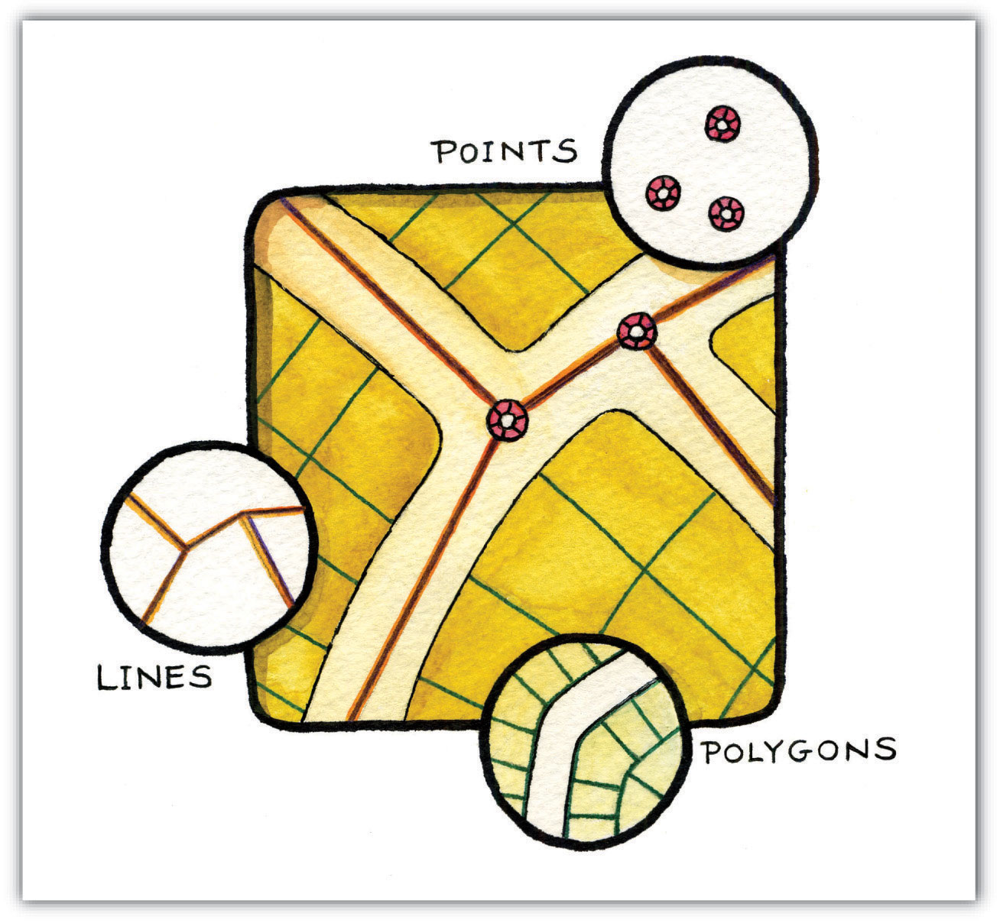Points can be spatially linked to form more complex features. LinesA one-dimensional object composed of multiple, explicitly connected points. Lines have the property of length. Also called an “arc.” are one-dimensional features composed of multiple, explicitly connected points. Lines are used to represent linear features such as roads, streams, faults, boundaries, and so forth. Lines have the property of length. Lines that directly connect two nodes are sometimes referred to as chains, edges, segments, or arcsA one-dimensional object composed of multiple, explicitly connected points. Lines have the property of length. Also called a “line.”.
PolygonsA two-dimensional feature created from multiple lines that loop back to create a “closed” feature. Polygons have the properties of area and perimeter. Also called “areas.” are two-dimensional features created by multiple lines that loop back to create a “closed” feature. In the case of polygons, the first coordinate pair (point) on the first line segment is the same as the last coordinate pair on the last line segment. Polygons are used to represent features such as city boundaries, geologic formations, lakes, soil associations, vegetation communities, and so forth. Polygons have the properties of area and perimeter. Polygons are also called areasA two-dimensional feature created from multiple lines that loop back to create a “closed” feature. Areas have the properties of area and perimeter. Also called “polygons.”.
Vector data models can be structured many different ways. We will examine two of the more common data structures here. The simplest vector data structure is called the spaghetti data modelA data model in which each point, line, and/or polygon feature is represented as a string of X, Y coordinate pairs with no inherent structure. (Dangermond 1982).Dangermond, J. 1982. “A Classification of Software Components Commonly Used in Geographic Information Systems.” In Proceedings of the U.S.-Australia Workshop on the Design and Implementation of Computer-Based Geographic Information Systems, 70–91. Honolulu, HI. In the spaghetti model, each point, line, and/or polygon feature is represented as a string of X, Y coordinate pairs (or as a single X, Y coordinate pair in the case of a vector image with a single point) with no inherent structure (Figure 4.9 "Spaghetti Data Model"). One could envision each line in this model to be a single strand of spaghetti that is formed into complex shapes by the addition of more and more strands of spaghetti. It is notable that in this model, any polygons that lie adjacent to each other must be made up of their own lines, or stands of spaghetti. In other words, each polygon must be uniquely defined by its own set of X, Y coordinate pairs, even if the adjacent polygons share the exact same boundary information. This creates some redundancies within the data model and therefore reduces efficiency.
Figure 4.9 Spaghetti Data Model
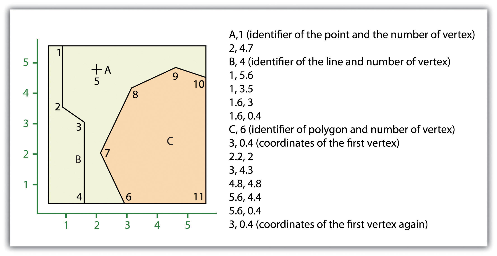Despite the location designations associated with each line, or strand of spaghetti, spatial relationships are not explicitly encoded within the spaghetti model; rather, they are implied by their location. This results in a lack of topological information, which is problematic if the user attempts to make measurements or analysis. The computational requirements, therefore, are very steep if any advanced analytical techniques are employed on vector files structured thusly. Nevertheless, the simple structure of the spaghetti data model allows for efficient reproduction of maps and graphics as this topological information is unnecessary for plotting and printing.
In contrast to the spaghetti data model, the topological data modelA data model characterized by the inclusion of topology. is characterized by the inclusion of topological information within the dataset, as the name implies. TopologyA set of rules that models the relationship between neighboring points, lines, and polygons and determines how they share geometry. Topology is also concerned with preserving spatial properties when the forms are bent, stretched, or placed under similar geometric transformation. is a set of rules that model the relationships between neighboring points, lines, and polygons and determines how they share geometry. For example, consider two adjacent polygons. In the spaghetti model, the shared boundary of two neighboring polygons is defined as two separate, identical lines. The inclusion of topology into the data model allows for a single line to represent this shared boundary with an explicit reference to denote which side of the line belongs with which polygon. Topology is also concerned with preserving spatial properties when the forms are bent, stretched, or placed under similar geometric transformations, which allows for more efficient projection and reprojection of map files.
Three basic topological precepts that are necessary to understand the topological data model are outlined here. First, connectivityThe topological property of lines sharing a common node. describes the arc-node topology for the feature dataset. As discussed previously, nodes are more than simple points. In the topological data model, nodes are the intersection points where two or more arcs meet. In the case of arc-node topology, arcs have both a from-node (i.e., starting node) indicating where the arc begins and a to-node (i.e., ending node) indicating where the arc ends (Figure 4.10 "Arc-Node Topology"). In addition, between each node pair is a line segment, sometimes called a link, which has its own identification number and references both its from-node and to-node. In Figure 4.10 "Arc-Node Topology", arcs 1, 2, and 3 all intersect because they share node 11. Therefore, the computer can determine that it is possible to move along arc 1 and turn onto arc 3, while it is not possible to move from arc 1 to arc 5, as they do not share a common node.
Figure 4.10 Arc-Node Topology
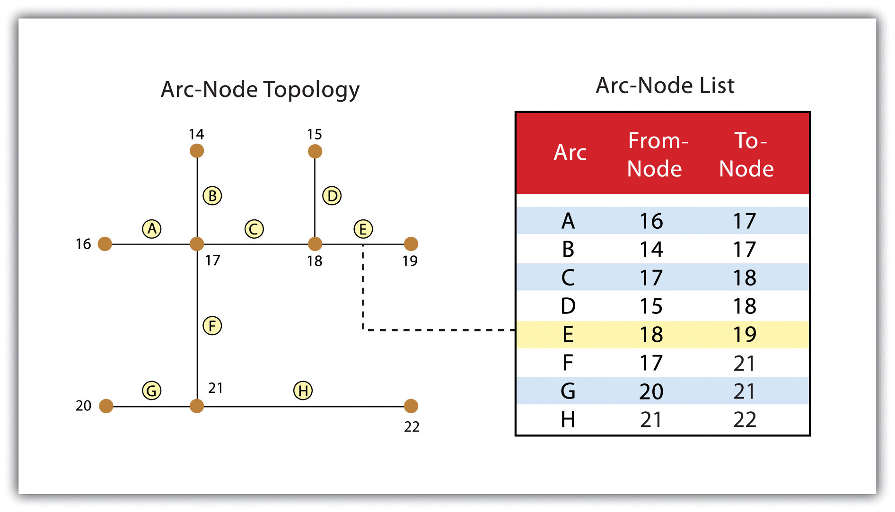The second basic topological precept is area definitionThe topological property stating that line segments connect to surround an area and define a polygon.. Area definition states that an arc that connects to surround an area defines a polygon, also called polygon-arc topology. In the case of polygon-arc topology, arcs are used to construct polygons, and each arc is stored only once (Figure 4.11 "Polygon-Arc Topology"). This results in a reduction in the amount of data stored and ensures that adjacent polygon boundaries do not overlap. In the Figure 4.11 "Polygon-Arc Topology", the polygon-arc topology makes it clear that polygon F is made up of arcs 8, 9, and 10.
Figure 4.11 Polygon-Arc Topology
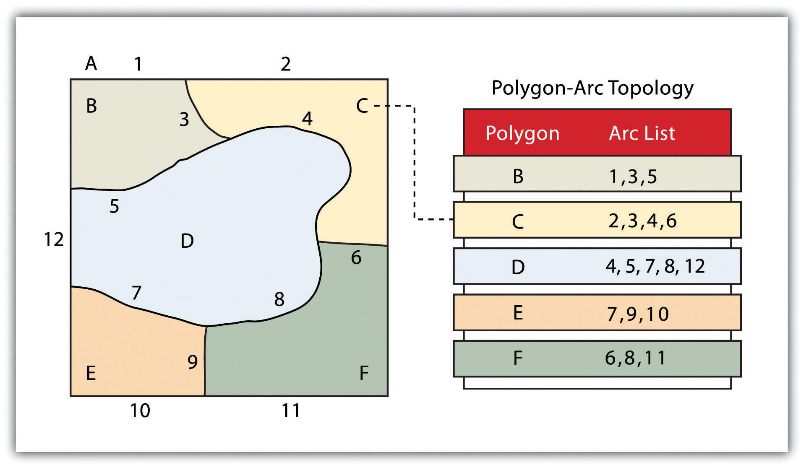ContiguityThe topological property of identifying adjacent polygons by recording the left and right side of each line segment., the third topological precept, is based on the concept that polygons that share a boundary are deemed adjacent. Specifically, polygon topology requires that all arcs in a polygon have a direction (a from-node and a to-node), which allows adjacency information to be determined (Figure 4.12 "Polygon Topology"). Polygons that share an arc are deemed adjacent, or contiguous, and therefore the “left” and “right” side of each arc can be defined. This left and right polygon information is stored explicitly within the attribute information of the topological data model. The “universe polygon” is an essential component of polygon topology that represents the external area located outside of the study area. Figure 4.12 "Polygon Topology" shows that arc 6 is bound on the left by polygon B and to the right by polygon C. Polygon A, the universe polygon, is to the left of arcs 1, 2, and 3.
Figure 4.12 Polygon Topology
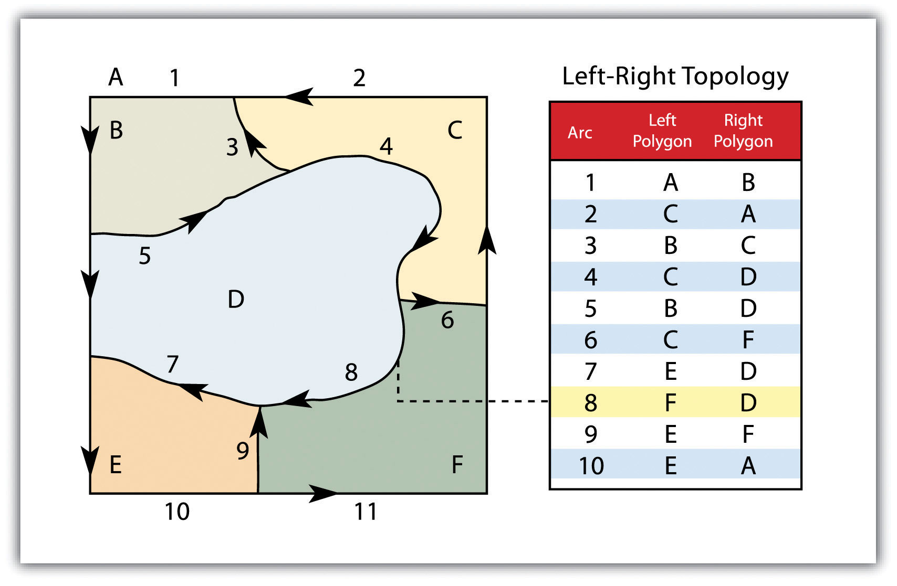Topology allows the computer to rapidly determine and analyze the spatial relationships of all its included features. In addition, topological information is important because it allows for efficient error detection within a vector dataset. In the case of polygon features, open or unclosed polygons, which occur when an arc does not completely loop back upon itself, and unlabeled polygons, which occur when an area does not contain any attribute information, violate polygon-arc topology rules. Another topological error found with polygon features is the sliverA narrow gap formed when the shared boundary of two polygons do not meet exactly.. Slivers occur when the shared boundary of two polygons do not meet exactly (Figure 4.13 "Common Topological Errors").
In the case of line features, topological errors occur when two lines do not meet perfectly at a node. This error is called an “undershoot” when the lines do not extend far enough to meet each other and an “overshoot” when the line extends beyond the feature it should connect to (Figure 4.13 "Common Topological Errors"). The result of overshoots and undershoots is a “dangling node” at the end of the line. Dangling nodes aren’t always an error, however, as they occur in the case of dead-end streets on a road map.
Figure 4.13 Common Topological Errors
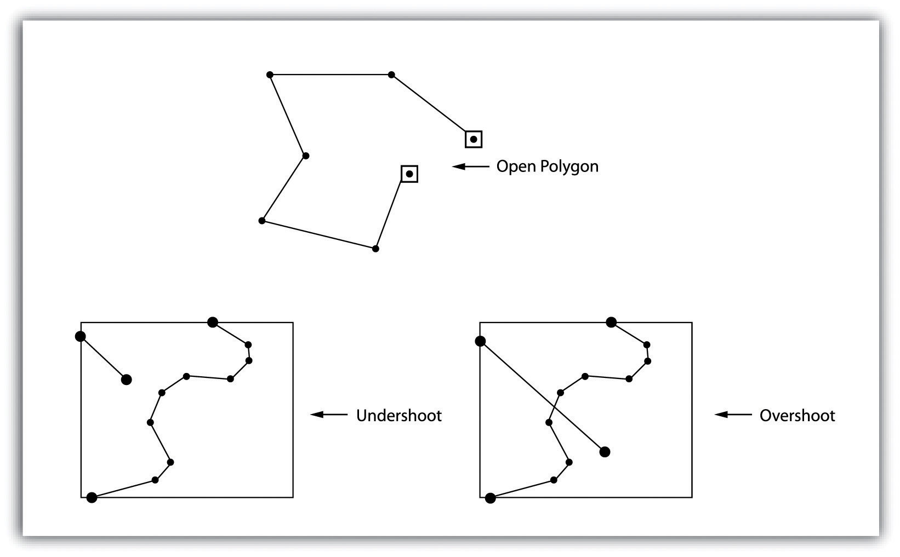Many types of spatial analysis require the degree of organization offered by topologically explicit data models. In particular, network analysis (e.g., finding the best route from one location to another) and measurement (e.g., finding the length of a river segment) relies heavily on the concept of to- and from-nodes and uses this information, along with attribute information, to calculate distances, shortest routes, quickest routes, and so forth. Topology also allows for sophisticated neighborhood analysis such as determining adjacency, clustering, nearest neighbors, and so forth.
Now that the basics of the concepts of topology have been outlined, we can begin to better understand the topological data model. In this model, the node acts as more than just a simple point along a line or polygon. The node represents the point of intersection for two or more arcs. Arcs may or may not be looped into polygons. Regardless, all nodes, arcs, and polygons are individually numbered. This numbering allows for quick and easy reference within the data model.
In comparison with the raster data model, vector data models tend to be better representations of reality due to the accuracy and precision of points, lines, and polygons over the regularly spaced grid cells of the raster model. This results in vector data tending to be more aesthetically pleasing than raster data.
Vector data also provides an increased ability to alter the scale of observation and analysis. As each coordinate pair associated with a point, line, and polygon represents an infinitesimally exact location (albeit limited by the number of significant digits and/or data acquisition methodologies), zooming deep into a vector image does not change the view of a vector graphic in the way that it does a raster graphic (see Figure 4.1 "Digital Picture with Zoomed Inset Showing Pixilation of Raster Image").
Vector data tend to be more compact in data structure, so file sizes are typically much smaller than their raster counterparts. Although the ability of modern computers has minimized the importance of maintaining small file sizes, vector data often require a fraction the computer storage space when compared to raster data.
The final advantage of vector data is that topology is inherent in the vector model. This topological information results in simplified spatial analysis (e.g., error detection, network analysis, proximity analysis, and spatial transformation) when using a vector model.
Alternatively, there are two primary disadvantages of the vector data model. First, the data structure tends to be much more complex than the simple raster data model. As the location of each vertex must be stored explicitly in the model, there are no shortcuts for storing data like there are for raster models (e.g., the run-length and quad-tree encoding methodologies).
Second, the implementation of spatial analysis can also be relatively complicated due to minor differences in accuracy and precision between the input datasets. Similarly, the algorithms for manipulating and analyzing vector data are complex and can lead to intensive processing requirements, particularly when dealing with large datasets.
A wide variety of satellite imagery and aerial photography is available for use in geographic information systems (GISs). Although these products are basically raster graphics, they are substantively different in their usage within a GIS. Satellite imagery and aerial photography provide important contextual information for a GIS and are often used to conduct heads-up digitizing (Chapter 5 "Geospatial Data Management", Section 5.1.4 "Secondary Data Capture") whereby features from the image are converted into vector datasets.
Remotely sensed satellite imagery is becoming increasingly common as satellites equipped with technologically advanced sensors are continually being sent into space by public agencies and private companies around the globe. Satellites are used for applications such as military and civilian earth observation, communication, navigation, weather, research, and more. Currently, more than 3,000 satellites have been sent to space, with over 2,500 of them originating from Russia and the United States. These satellites maintain different altitudes, inclinations, eccentricities, synchronies, and orbital centers, allowing them to image a wide variety of surface features and processes (Figure 4.14 "Satellites Orbiting the Earth").
Figure 4.14 Satellites Orbiting the Earth
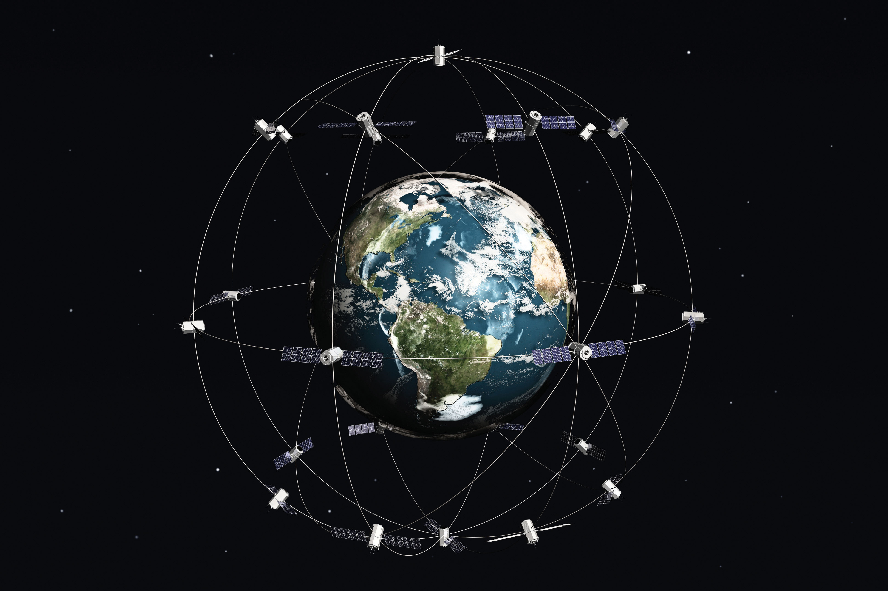Satellites can be active or passive. Active satellitesRemote sensors that detect reflected responses from objects that are irradiated from artificially generated energy sources. make use of remote sensors that detect reflected responses from objects that are irradiated from artificially generated energy sources. For example, active sensors such as radars emit radio waves, laser sensors emit light waves, and sonar sensors emit sound waves. In all cases, the sensor emits the signal and then calculates the time it takes for the returned signal to “bounce” back from some remote feature. Knowing the speed of the emitted signal, the time delay from the original emission to the return can be used to calculate the distance to the feature.
Passive satellitesRemote sensors that detect the reflected or emitted electromagnetic radiation from natural sources., alternatively, make use of sensors that detect the reflected or emitted electromagnetic radiation from natural sources. This natural source is typically the energy from the sun, but other sources can be imaged as well, such as magnetism and geothermal activity. Using an example we’ve all experienced, taking a picture with a flash-enabled camera would be active remote sensing, while using a camera without a flash (i.e., relying on ambient light to illuminate the scene) would be passive remote sensing.
The quality and quantity of satellite imagery is largely determined by their resolution. There are four types of resolution that characterize any particular remote sensor (Campbell 2002).Campbell, J. B. 2002. Introduction to Remote Sensing. New York: Guilford Press. The spatial resolutionThe smallest distance between two adjacent features that can be detected in an image. of a satellite image, as described previously in the raster data model section (Section 4.1 "Raster Data Models"), is a direct representation of the ground coverage for each pixel shown in the image. If a satellite produces imagery with a 10 m resolution, the corresponding ground coverage for each of those pixels is 10 m by 10 m, or 100 square meters on the ground. Spatial resolution is determined by the sensors’ instantaneous field of view (IFOV). The IFOV is essentially the ground area through which the sensor is receiving the electromagnetic radiation signal and is determined by height and angle of the imaging platform.
Spectral resolutionThe ability of a sensor to resolve wavelength intervals, also called bands, within the electromagnetic spectrum. denotes the ability of the sensor to resolve wavelength intervals, also called bands, within the electromagnetic spectrum. The spectral resolution is determined by the interval size of the wavelengths and the number of intervals being scanned. Multispectral and hyperspectral sensors are those sensors that can resolve a multitude of wavelengths intervals within the spectrum. For example, the IKONOS satellite resolves images for bands at the blue (445–516 nm), green (506–95 nm), red (632–98 nm), and near-infrared (757–853 nm) wavelength intervals on its 4-meter multispectral sensor.
Temporal resolutionThe amount of time between each image collection period determined by the repeat cycle of a satellite’s orbit. is the amount of time between each image collection period and is determined by the repeat cycle of the satellite’s orbit. Temporal resolution can be thought of as true-nadir or off-nadir. Areas considered true-nadir are those located directly beneath the sensor while off-nadir areas are those that are imaged obliquely. In the case of the IKONOS satellite, the temporal resolution is 3 to 5 days for off-nadir imaging and 144 days for true-nadir imaging.
The fourth and final type of resolution, radiometric resolutionThe sensitivity of a remote sensor to variations in brightness., refers to the sensitivity of the sensor to variations in brightness and specifically denotes the number of grayscale levels that can be imaged by the sensor. Typically, the available radiometric values for a sensor are 8-bit (yielding values that range from 0–255 as 256 unique values or as 28 values); 11-bit (0–2,047); 12-bit (0–4,095); or 16-bit (0–63,535) (see Chapter 5 "Geospatial Data Management", Section 5.1.1 "Data Types" for more on bits). Landsat-7, for example, maintains 8-bit resolution for its bands and can therefore record values for each pixel that range from 0 to 255.
Because of the technical constraints associated with satellite remote sensing systems, there is a trade-off between these different types of resolution. Improving one type of resolution often necessitates a reduction in one of the other types of resolution. For example, an increase in spatial resolution is typically associated with a decrease in spectral resolution, and vice versa. Similarly, geostationary satellitesSatellites that circle the earth proximal to the equator once each day. (those that circle the earth proximal to the equator once each day) yield high temporal resolution but low spatial resolution, while sun-synchronous satellitesSatellites that synchronize a near-polar orbit with the sun’s illumination. (those that synchronize a near-polar orbit of the sensor with the sun’s illumination) yield low temporal resolution while providing high spatial resolution. Although technological advances can generally improve the various resolutions of an image, care must always be taken to ensure that the imagery you have chosen is adequate to the represent or model the geospatial features that are most important to your study.
Aerial photography, like satellite imagery, represents a vast source of information for use in any GIS. Platforms for the hardware used to take aerial photographs include airplanes, helicopters, balloons, rockets, and so forth. While aerial photography connotes images taken of the visible spectrum, sensors to measure bands within the nonvisible spectrum (e.g., ultraviolet, infrared, near-infrared) can also be fixed to aerial sources. Similarly, aerial photography can be active or passive and can be taken from vertical or oblique angles. Care must be taken with aerial photographs as the sensors used to take the images are similar to cameras in their use of lenses. These lenses add a curvature to the images, which becomes more pronounced as one moves away from the center of the photo (Figure 4.15 "Curvature Error Due to Lenticular Properties of Camera").
Figure 4.15 Curvature Error Due to Lenticular Properties of Camera
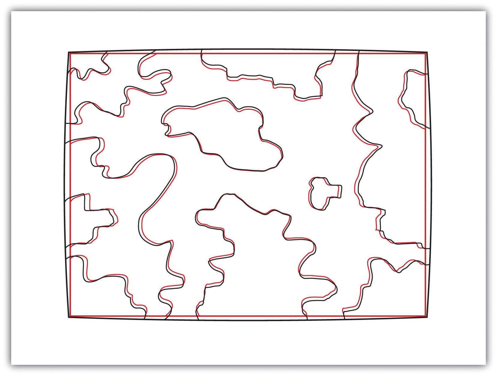Another source of potential error in an aerial photograph is relief displacement. This error arises from the three-dimensional aspect of terrain features and is seen as apparent leaning away of vertical objects from the center point of an aerial photograph. To imagine this type of error, consider that a smokestack would look like a doughnut if the viewing camera was directly above the feature. However, if this same smokestack was observed near the edge of the camera’s view, one could observe the sides of the smokestack. This error is frequently seen with trees and multistory buildings and worsens with increasingly taller features.
OrthophotosVertical photographs that have been geometrically “corrected” to remove the curvature and terrain-induced error from images. are vertical photographs that have been geometrically “corrected” to remove the curvature and terrain-induced error from images (Figure 4.16 "Orthophoto"). The most common orthophoto product is the digital ortho quarter quadrangle (DOQQ). DOQQs are available through the US Geological Survey (USGS), who began producing these images from their library of 1:40,000-scale National Aerial Photography Program photos. These images can be obtained in either grayscale or color with 1-meter spatial resolution and 8-bit radiometric resolution. As the name suggests, these images cover a quarter of a USGS 7.5 minute quadrangle, which equals an approximately 25 square mile area. Included with these photos is an additional 50 to 300-meter edge around the photo that allows users to mosaic many DOQQs into a single, continuous image. These DOQQs are ideal for use in a GIS as background display information, for data editing, and for heads-up digitizing.
Figure 4.16 Orthophoto
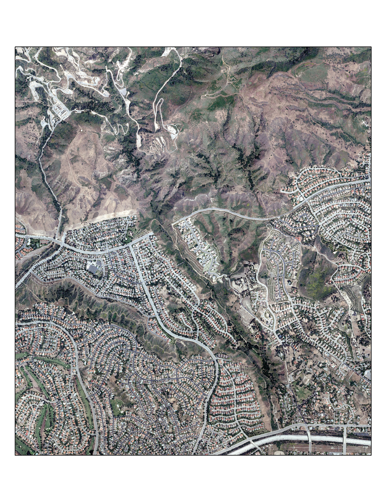Source: Data available from U.S. Geological Survey, Earth Resources Observation and Science (EROS) Center, Sioux Falls, SD.